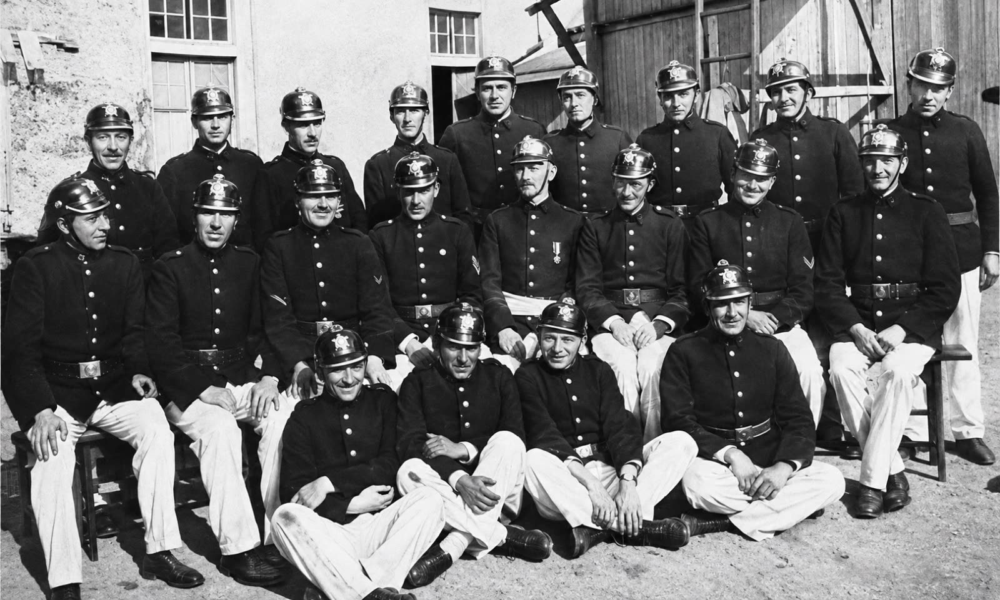

Los quintinos que fundaron la compañía en 1908.
Transcurría plácidamente el verano de 1908. El mes de enero se había iniciado con el afán de que todos concurrieran a las playas del puerto en busca de la refrescante brisa marina…
Pero nada hacía presagiar que un gran incendio generaría que sonaran las campanas del Cuerpo de Bomberos de Talcahuano.
Lo anterior generó inquietud en muchos hogares, ya que grandes llamas teñían de rojo la noche estival y todos corrían hacia el centro de la ciudad.
El fuego destruía importantes edificios situados en las calles Bulnes y Aníbal Pinto. Dada la rapidez con que se extendió el incendio, se hizo imposible salvar el menaje de algunas casas afectadas por el siniestro. Entre las familias damnificadas se encontraban algunas de origen alemán.
Las dificultades originadas por la carencia de elementos necesarios para el salvamento demostraron que las cuatro compañías con que contaba en ese momento el Cuerpo de Bomberos de Talcahuano eran insuficientes para estos casos. Era, por lo tanto, de absoluta necesidad organizar una nueva compañía de «Guardia de Propiedad».
Al día siguiente del gran incendio, los señores Carlos Gantz, uno de los damnificados por el siniestro de la noche anterior, y Enrique Trouchon intercambiaron ideas sobre el particular y, en los días siguientes, iniciaron una activa campaña entre los miembros de la colonia alemana en el puerto de Talcahuano.
Muchos de ellos habían concurrido al siniestro para prestar ayuda. Lo anterior generó una convocatoria a una reunión con la finalidad de dar forma a una nueva institución bomberil con raíces germánicas.
Es por eso que, el 29 de enero de 1908, se reunieron en los salones del antiguo Club Musical de Talcahuano un grupo de alemanes y descendientes de alemanes, entre quienes se encontraban:
Ernest Werkmeister, Ricardo Setz, Eugenio Delpín, Eduardo Schuyler, Hermógenes Pérez de Arce, Enrique Trouchon, Otto Mühle, Alfredo Schlegel, Augusto Pfister, Ricardo Gantz, Andrés Yensen, Max Dreyer, Cristian Boyens, Carlos Gantz, Max Henning, Luis Thielemann, R. Schulze, H. Schumacher, F. Kuhn y Hermann Franz, entre otros.
Hombres visionarios que, unidos por un profundo espíritu de servicio y compromiso con el puerto que nos acogió, dieron vida a una institución que habría de escribir su propia historia al día de hoy.
